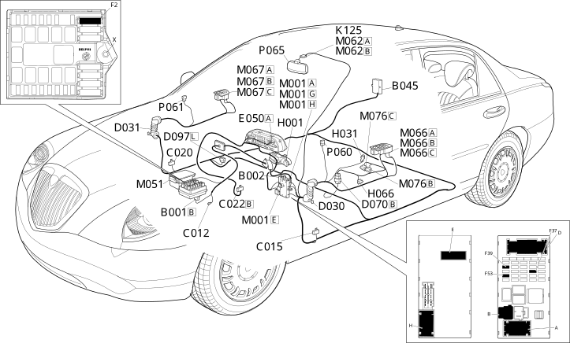

E3032 EXTERIOR MIRRORS ADJUSTMENT LOCATION COMPONENTS
- Path
- Electrical equipment > ELECTRICAL FUNCTIONS > E30 ELECTRICALLY ACTIVATED DEVICES > E3032 DOOR MIRROR ADJUSTMENT > E3032 EXTERIOR MIRRORS ADJUSTMENT LOCATION COMPONENTS
- Kind
- topic
- Applies to
- all engines; all production periods
- Interactive page
- https://sloeber94.github.io/elrnDB-lThss/en/#/841004050
Applies to: all engines; all production periods
Location Components

Components
Component code | Name | Assembly reference |
|---|---|---|
Engine compartment junction unit | 5505A | |
Junction unit under dashboard | - | |
Luggage compartment junction unit (CVB) | 5505A | |
- | ||
Driver's dashboard earth | - | |
- | ||
Centre dashboard earth | - | |
Left front door coupling | - | |
- | ||
Driver's seat coupling | - | |
Short circuit coupling | - | |
Instrument panel | - | |
Ignition switch | - | |
Adjustable/folding mirrors control | 7005R | |
7045J | ||
K125 | RAIN, DUSK AND MISTING SENSOR | - |
Body computer | - | |
Braking system control unit (NFR) | - | |
7040E | ||
Driver's door control unit (NPG) | 7005M | |
Passenger door control unit (NPP) | 7005M | |
Seats/mirrors with memory control unit | - | |
7005R | ||
Right external rear view mirror | 7005R | |
- |
Topics linked from this page (24)
- B001 Engine compartment junction unit
- B002 Junction unit under dashboard
- B045 Luggage compartment junction unit (CVB)
- C012 ABS front earth
- C015 Driver's dashboard earth
- C020 Passenger dashboard earth
- C022 Centre dashboard earth
- D030 Left front door coupling
- D031 Right front door coupling
- D070 Driver's seat coupling
- D097 Short circuit coupling
- E050 Instrument panel
- H001 Ignition switch
- H031 Adjustable/folding mirrors control
- H066 Driver's seat movement controls
- M001 Body computer
- M051 Braking system control unit (NFR)
- M062 Roof control unit (NIM)
- M066 Driver's door control unit (NPG)
- M067 Passenger door control unit (NPP)
- M076 Seats/mirrors with memory control unit
- P060 Left external rear view mirror
- P061 Right external rear view mirror
- P065 Electro-chromic interior rear view mirror